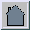
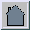

Top
Home
Top
Home
To build and install npasswd, the following are needed:
The npasswd package produces the following components which share infrastructure and code:
The full list and description of files in the distribution is in @NPASSWD-SRC@/MANIFEST.
Files in the distribution |
|
| Configure | Script which probes system facilities and performs package setup. Produces config.sh and expands all .SH files in the distribution. See About Configure. |
| config.sh | Shell script which contains settings from Configure. |
| config.h | C include which contains settings from config.sh. |
| config_h.SH | Shell script which creates config.h. |
| Makefile.SH | Shell script which creates Makefile with settings from config.sh |
| *.SH | Shell script which produces a file with settings from config.sh |
Directories in the distribution |
|
| developer | Developer support files. These are in the developers kit. |
| dict | Dictionary sources (which are a separate distribution). |
| doc | Documentation (text, manual pages, HTML) |
| hints | Platform-specific hints for Configure. |
| files | Configuration, help and message files. |
| src | Top level sources. |
| src/Common | Sources for common object library. |
| src/Methods | Sources for password database method modules. |
| src/Methods/TestSuite | Sources for passwd database method module test suite. |
| src/Scripts | Sources for utility scripts. |
| src/PasswordCheck | Sources for password check library. |
| src/PasswordCheck/cracklib | Sources for Crack library. |
| src/PasswordCheck/cracklib/tools | Sources for Crack library testing and dictionary tools. |
Configure is a shell script which probes the system environment to determine how to build npasswd.
It will determine what kind of system it is running on, features available and idiosyncrasies of the C compiliation environment.
The result of running Configure is config.sh, which contains shell variable settings which will be incorporated into other files. Every file ending with ".SH" is a script which, when run, produce a source file with settings from config.sh.
Configure itself is built using the metaconfig software configuration package. If you do porting or development work on npasswd, fetch the developer kit and modify the metaconfig units from which Configure is built. It is a lot easier to integrate changes to metaconfig units rather than determine which unit a particular Configure change affects.
-d Use defaults for all answers.
-e Go without questioning to building config.sh.
-h Print help message and exit.
-S Expand all .SH files.
For most of the questions you are asked by Configure, taking the default is sufficient. Some of the questions require your attention, especially the first time Configure is run.
Do you expect to run these scripts and binaries on multiple machines? [n]
Pathname where the private library files will reside?
### Found passwd files "/etc/passwd"
Change passwd file list? [n]
### Found shadow files "/etc/shadow"
Change shadow file list? [n]
Replace system programs? [y]
Activate the "paranoid" option [n]
Password history file [/usr/lib/passwd/history]
If your system has symbolic links, it is a good idea to use a "build tree" to keep the source area clean. The BuildTree script will do this.
build-area is where you want to build npasswd
source-area is the directory where you unpacked the distribution.
mkdir build-area
cd build-area
sh source-area/bin/BuildTree source-area
During build process some directories will be visited multiple times. This is because of the dependencies between various parts of the package.
| help | See what package targets are available. |
| all | Build the default stuff, whatever that may be. Most all targets do make all in subdirectories. |
| depend | Update the C source dependencies. A modified Makefile is created which has the dependency information at the end. Most depend targets do make depend in subdirectories. |
| install | Install what is built in this directory. Most install targets do make install in subdirectories. |
| deinstall | Remove what is built in this directory. Most deinstall targets do make deinstall in subdirectories. |
| clean | Light debris removal. |
| realclean | Total cleanup of debris, object files and executables. |
These targets alter the compile and load flags
in Makefile.local, which is included by the Makefile. They also
do recursive makes in subdirectories.
(See the Support Guide for details)
| debug-none | Build production executables. The -XD command line option is available for run-time debugging. |
| debug-dbx | Build production executables with source debugger support. |
| debug-files | Build debug-dbx executables which change files in the current directory. |
| debug-system | Build debug-system executables with many security and update checks
disabled.
These executables are insecure, partly non-functional and are NOT suitable for production. |
Major customizations can be done by running Configure. Some changes require modification of options.h. The file to edit is options_h.SH.
Follow this procedure:
edit options_h.SH # Change the source sh options_h.SH # Reconstruct the file make realclean # Remove objects and executables make # Rebuild with new options
Invoke make install in the top-level build directory.
To reinstall the vendor password programs, run @NPASSWD-UTIL@/restorefiles.
To reinstall the vendor programs and delete npasswd, do
make deinstallin the top build directory. If the replace vendor programs option was not enabled, the system utilities are not affected by the removal process.
The procedure to build, install and setup npasswd:
gunzip --stdout npasswd-2.XX.tar.gz | tar xpfv - # Unpack npasswd cd dict gunzip --stdout npasswd-words.gz | tar xpfv - # Unpack word lists cd .. Configure # Answer the questions make # Build everything make install # Install everything @NPASSWD-UTIL@/history_admin load < /dev/null # Make history database
The following files and directories are installed as part of npasswd. All of these files (except the configuration file) can be relocated by directives in the configuration file.
The path @NPASSWD-HOME@ can be changed by re-running Configure.
| Default location | What it is |
|---|---|
| @NPASSWD-HOME@ | Directory where all the parts live |
| @NPASSWD-XBIN@ | Directory where vendor utilities are saved |
| @NPASSWD-DICT@ | Main repository for hashed dictionary files |
| @NPASSWD-DOCS@ | Directory for npasswd documentation |
| @NPASSWD-UTIL@ | Directory for miscellaneous programs |
| @NPASSWD-HOME@/passwd.conf | The npasswd configuration file |
| @NPASSWD-HOME@/chfn.help
@NPASSWD-HOME@/chfn.motd |
Help and message-of-the-day for chfn sub-program |
| @NPASSWD-HOME@/chsh.help
@NPASSWD-HOME@/chsh.motd |
Help and message-of-the-day for chsh sub-program |
| @NPASSWD-HOME@/passwd.motd
@NPASSWD-HOME@/passwd.motd |
Help and message-of-the-day for passwd sub-program |
| @NPASSWD-HIST@ | Password history database |
Document id %Z% %M% %I%
Version %I%
Last modified %G%
Clyde Hoover